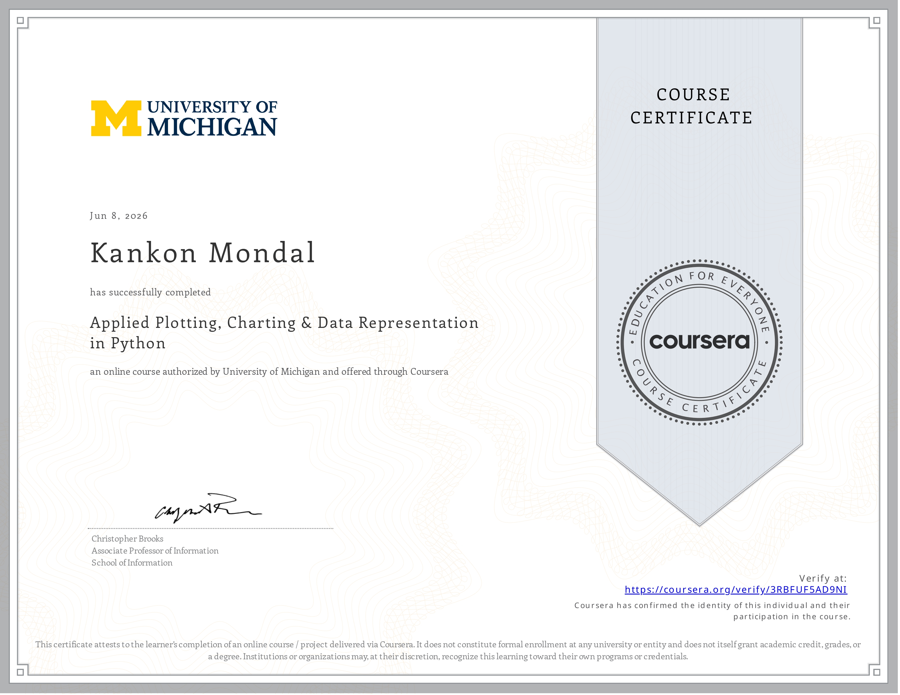
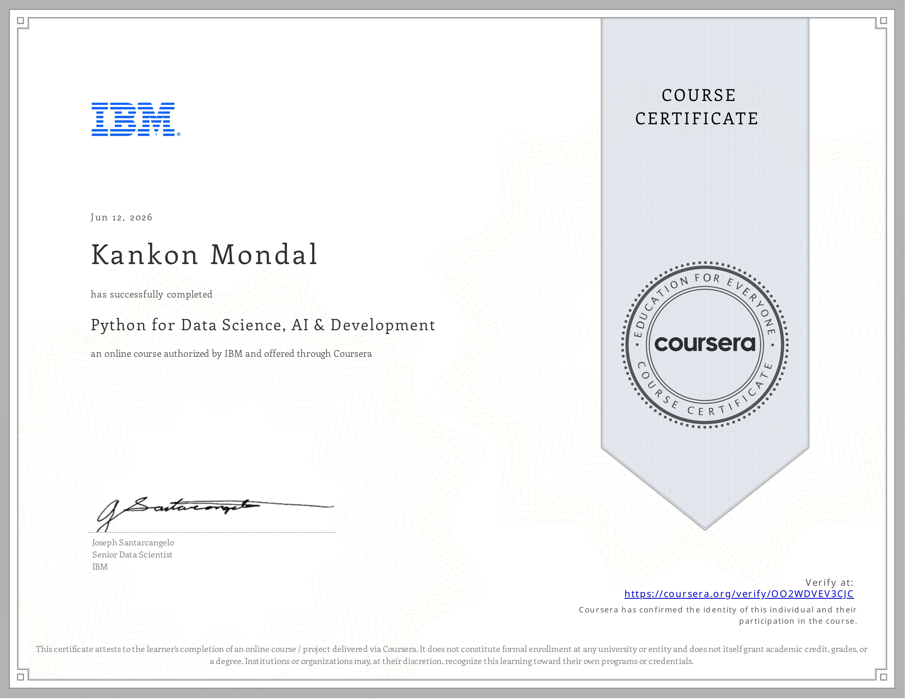

About Me
Academic foundations, technical mindset, and long-term research ambitions.
ECE Student & Tech Enthusiast
I am currently pursuing my B.Sc. in Electronics & Communication Engineering at Khulna University of Engineering & Technology (KUET), Bangladesh. My academic focus lies in Analog Electronics, Signal Processing, and Magnetic Materials, while my engineering passion extends deeply into Computer Science, Algorithms, and Machine Learning.
With an analytical and goal-driven mindset, I continuously solve algorithmic problems in C and Python, build useful digital resources for my university department, and actively prepare for higher graduate studies in Europe (such as DAAD and Erasmus Mundus programs).
Education & Certifications
Formal degree progression and verified international credentials.
B.Sc. in Electronics & Communication Engineering
Khulna University of Engineering & Technology (KUET). Core curriculum covering Analog & Digital Electronics, Signals & Systems, Electromagnetics, and Computational Methods.
Python for Data Science, AI & Development
IBM via Coursera. Data structures, API integration, web scraping, and AI development fundamentals in Python.
Verify Credential
Applied Plotting, Charting & Data Representation
University of Michigan via Coursera. Visualization design, Matplotlib architecture, exploratory statistical charting, and visual analytics.
Verify Credential
Intro to Data Science in Python
University of Michigan via Coursera. NumPy arrays, Pandas DataFrames, data cleaning, querying, and exploratory data analysis.
Verify Credential
CS50x – Introduction to Computer Science
Harvard University. Rigorous computer science curriculum including C memory allocation, pointers, algorithms, Python OOP, SQL databases, and full-stack web.
Verify Certificate

Introduction to Data Science in Python
University of Michigan via Coursera • March 17, 2026
Verified Certificate
Applied Plotting, Charting & Data Representation
University of Michigan via Coursera • June 8, 2026
Verified Certificate
Python for Data Science, AI & Development
IBM via Coursera • June 12, 2026
Verified Certificate
CS50x – Introduction to Computer Science
Harvard University • 2026
Verified CertificateWhat I Do
Core technical disciplines and hands-on domains.
Embedded Systems & IoT
Building hardware-software interfaces with Arduino, sensors, and microcontrollers. Passionate about smart electronics, schematic simulations in Proteus/Multisim, and hardware automation.
Web & API Development
Crafting responsive, clean web platforms and educational applications with modern HTML5, CSS3, JavaScript, and backend REST APIs with FastAPI.
Data Science & ML
Analyzing datasets with Python, Pandas, and NumPy. Designing predictive machine learning models with Scikit-Learn and building exploratory visualization dashboards.
Hobbies & Interests
Activities that recharge creativity and sharpen logical thinking.
"Every expert was once a beginner — I'm building my technical future one capable project at a time."